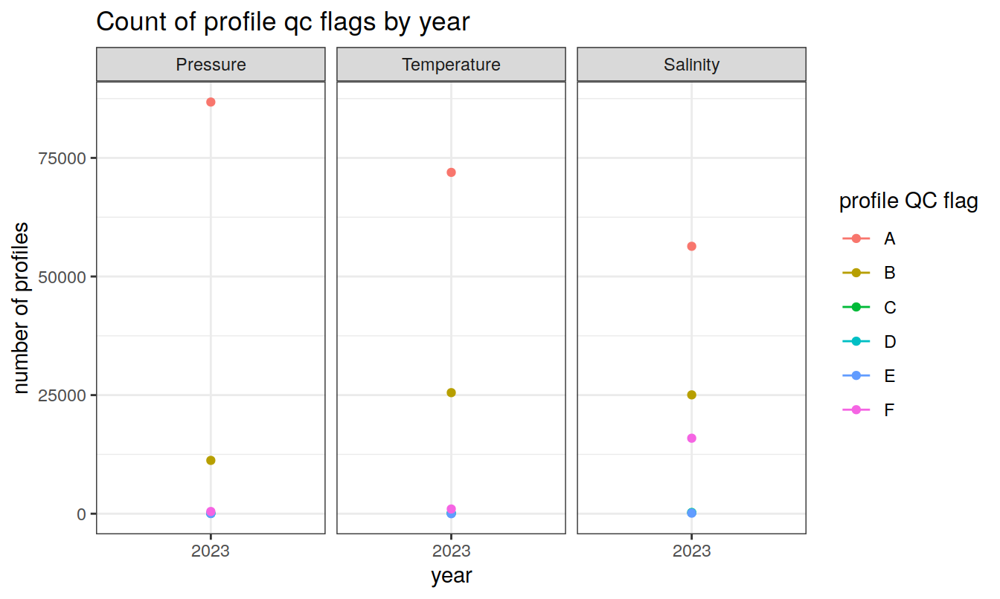

Load Core-Argo Data
David Stappard, Pasqualina Vonlanthen & Jens Daniel Müller
06 December, 2023
Last updated: 2023-12-06
Checks: 7 0
Knit directory: bgc_argo_r_argodata/
This reproducible R Markdown analysis was created with workflowr (version 1.7.0). The Checks tab describes the reproducibility checks that were applied when the results were created. The Past versions tab lists the development history.
Great! Since the R Markdown file has been committed to the Git repository, you know the exact version of the code that produced these results.
Great job! The global environment was empty. Objects defined in the global environment can affect the analysis in your R Markdown file in unknown ways. For reproduciblity it’s best to always run the code in an empty environment.
The command set.seed(20211008) was run prior to running
the code in the R Markdown file. Setting a seed ensures that any results
that rely on randomness, e.g. subsampling or permutations, are
reproducible.
Great job! Recording the operating system, R version, and package versions is critical for reproducibility.
Nice! There were no cached chunks for this analysis, so you can be confident that you successfully produced the results during this run.
Great job! Using relative paths to the files within your workflowr project makes it easier to run your code on other machines.
Great! You are using Git for version control. Tracking code development and connecting the code version to the results is critical for reproducibility.
The results in this page were generated with repository version 83269d5. See the Past versions tab to see a history of the changes made to the R Markdown and HTML files.
Note that you need to be careful to ensure that all relevant files for
the analysis have been committed to Git prior to generating the results
(you can use wflow_publish or
wflow_git_commit). workflowr only checks the R Markdown
file, but you know if there are other scripts or data files that it
depends on. Below is the status of the Git repository when the results
were generated:
Ignored files:
Ignored: .Rhistory
Ignored: .Rproj.user/
Ignored: output/
Note that any generated files, e.g. HTML, png, CSS, etc., are not included in this status report because it is ok for generated content to have uncommitted changes.
These are the previous versions of the repository in which changes were
made to the R Markdown (analysis/load_argo_core.Rmd) and
HTML (docs/load_argo_core.html) files. If you’ve configured
a remote Git repository (see ?wflow_git_remote), click on
the hyperlinks in the table below to view the files as they were in that
past version.
| File | Version | Author | Date | Message |
|---|---|---|---|---|
| html | 7b0dde9 | ds2n19 | 2023-11-27 | Build site. |
| Rmd | 48f510c | ds2n19 | 2023-11-27 | Cluster under surface extreme. |
| html | b8a2611 | ds2n19 | 2023-11-27 | Build site. |
| Rmd | 6c81f96 | ds2n19 | 2023-11-27 | Cluster under surface extreme. |
| html | 80c16c2 | ds2n19 | 2023-11-15 | Build site. |
| Rmd | 3eba518 | ds2n19 | 2023-11-15 | Introduction of vertical alignment and cluster analysis to github website. |
| Rmd | e07ffb5 | ds2n19 | 2023-11-11 | Updates after code reviewand additional documentation. |
| Rmd | b18136a | jens-daniel-mueller | 2023-11-09 | code review |
| Rmd | 4fcef97 | ds2n19 | 2023-11-01 | vertical alignment of bgc and core profiles and then cluster analysis. |
| Rmd | 8edb9f4 | ds2n19 | 2023-10-17 | BGC load process aligned to core load. Associated changes to pH and oxygen analysis. |
| html | c7c6b3c | ds2n19 | 2023-10-14 | Build site. |
| Rmd | 806687a | ds2n19 | 2023-10-14 | Added load qc metrics |
| html | 7227bdb | ds2n19 | 2023-10-14 | Build site. |
| Rmd | d6e0aca | ds2n19 | 2023-10-14 | Added load qc metrics |
| html | 12d26f4 | ds2n19 | 2023-10-14 | Build site. |
| Rmd | 311a3ad | ds2n19 | 2023-10-14 | Added load qc metrics |
| html | c1dc2c4 | ds2n19 | 2023-10-14 | Build site. |
| Rmd | 7b9cd9b | ds2n19 | 2023-10-14 | Added load qc metrics |
| html | d6fe78d | ds2n19 | 2023-10-14 | Build site. |
| Rmd | cc09ea4 | ds2n19 | 2023-10-14 | Added load qc metrics |
| html | eec64f7 | ds2n19 | 2023-10-13 | Build site. |
| Rmd | 2ca768d | ds2n19 | 2023-10-13 | Added load qc metrics |
| html | 35d0933 | ds2n19 | 2023-10-13 | Build site. |
| Rmd | 3f8f36e | ds2n19 | 2023-10-13 | Added load qc metrics |
| Rmd | 6d38b59 | ds2n19 | 2023-10-12 | minor changes after JDM code review |
| html | 2e78f0a | ds2n19 | 2023-10-12 | Build site. |
| Rmd | d1405fb | ds2n19 | 2023-10-11 | Run core Argo after code review 2013 - 2023 |
| Rmd | 72f849f | jens-daniel-mueller | 2023-10-11 | code review |
| Rmd | 5bf13a5 | ds2n19 | 2023-10-11 | load core conflicts resolved |
| Rmd | 1ae81b3 | ds2n19 | 2023-10-11 | reworked core load process to work initially by year and then finally create consolidated all years files. |
| html | f4c8d6f | ds2n19 | 2023-10-11 | Build site. |
| Rmd | f5edbe3 | ds2n19 | 2023-10-10 | Create simplified data sets and run for 2013 - 2023 |
| html | 7394ba8 | ds2n19 | 2023-10-10 | Build site. |
| Rmd | a5002da | ds2n19 | 2023-10-10 | Create simplified data sets and run for 2013 - 2023 |
| Rmd | aac59da | ds2n19 | 2023-10-09 | Create targetted data sets and run for 2013 - 2023 |
| html | 26f85f0 | ds2n19 | 2023-10-06 | Build site. |
| Rmd | 2bd702c | ds2n19 | 2023-10-06 | Changed core Argo location folders and run for 2022 |
| html | c3381d0 | ds2n19 | 2023-10-06 | Build site. |
| Rmd | bc8d46d | ds2n19 | 2023-10-06 | Changed core Argo location folders and run for 2022 |
| html | 8d5c853 | pasqualina-vonlanthendinenna | 2022-08-30 | Build site. |
| Rmd | 9bde106 | pasqualina-vonlanthendinenna | 2022-08-30 | added 6 months of core data (still have to fix the dates |
| html | 7b3d8c5 | pasqualina-vonlanthendinenna | 2022-08-29 | Build site. |
| Rmd | 8e81570 | pasqualina-vonlanthendinenna | 2022-08-29 | load and add in core-argo data (1 month) |
Task
Makes use of argodata libraries to load argo profile related data, stages load index, data and metadata files. Cache files (saved in /nfs/kryo/work/datasets/ungridded/3d/ocean/floats/core_argo_r_argodata and dac subdirectory) are used, set option opt_refresh_cache to TRUE to force a refresh – This process takes considerable time.
The load process described in this paragraph is carried out for each year and the files are saved to the core preprocessed. core_index data frame is created based on delayed mode files and a supplied date range. The index file is then used to load profile data into core_data and associated meta data into core_metadata. core_data is segregated into core_data_temp and core_data_psal. core_data_temp, core_data_psal and core_metadata are filtered by n_prof == opt_n_prof_sel. Description of n_prof usage is provided at https://argo.ucsd.edu/data/data-faq/version-3-profile-files/ the following is from that page. The main Argo CTD profile is stored in N_PROF=1. All other parameters (including biogeochemical parameters) that are measured with the same vertical sampling scheme and at the same location and time as the main Argo CTD profile are also stored in N_PROF=1.
On completion combined all year core_data_temp, core_data_psal and core_metadata that incorporate all years. core_data_temp, core_data_psal and core_metadata initially contain a string field file that uniquely identifies the profile and links the two data frames. An additional data from core_fileid is created with a unique list file fields along with a numeric file_id field. The file fields in core_data and core_metadata are then replaced with file_id.
core_temp_flag_A and core_temp_flag_AB are created that support prior analysis. In addition, a data frame core_measure_summary is created that is used for load level reporting figures.
Files are written to the core preprocessed folder for ongoing analysis.
Dependencies
Cache files - /nfs/kryo/work/datasets/ungridded/3d/ocean/floats/ core_argo_r_argodata
Outputs (in core preprocessed folder)
core_index.rds – Copy of the index file that was used in the selection of data and meta data files.
core_data_temp.rds – The main core temperature profile data.
core_data_psal.rds – The main core salinity profile data.
core_metadata.rds – The associated meta data information.
core_fileid.rds – A lookup from file_id to file.
Each of the below files are used in prior analysis and maintained to support that analysis.
core_temp_flag_A.rds
core_temp_flag_AB.rds
Set load options
Determine if files are refreshed from dac or cache directory is used. Are metadata, temperature and salinity year files renewed? Are the consolidated all year files created from the individual year files?
# opt_refresh_cache
# FALSE = do not refresh cache.
# TRUE = refresh cache. (any none zero value will force a refresh)
opt_refresh_cache = FALSE
# opt_refresh_years_temp, opt_refresh_years_psal, opt_refresh_years_metadata
# FALSE = do not refresh the yearly files. (any value <> 1 will omit annual refresh)
# TRUE = refresh yearly files for given parameter.
# year to be refreshed are set by opt_min_year and opt_max_year
opt_refresh_years_temp = TRUE
opt_refresh_years_psal = TRUE
opt_refresh_years_metadata = TRUE
opt_min_year = 2013
opt_max_year = 2023
# opt_consolidate_temp, opt_consolidate_psal, opt_consolidate_metadata
# Yearly files must have already been created!
# FALSE = do not build consolidated file from previously written yearly files. (any value <> 1 will omit consolidation)
# TRUE = build consolidated file from previously written yearly files for given parameter.
# year to be included in the consolidation are set by opt_min_year and opt_max_year
opt_consolidate_temp = TRUE
opt_consolidate_psal = TRUE
opt_consolidate_metadata = TRUE
# opt_A_AB_files
# consolidated temp files must have already been created!
# FALSE = do not build temp_A and temp_AB file from previously written consolidated files. (any value <> 1 will omit A and AB files)
# TRUE = build temp_A and temp_AB file from previously written consolidated files.
opt_A_AB_files = TRUE
# opt_review_mode
# if set (TRUE) the processing will take place in a sub-directory opt_review_dir and only process 10 days of profiles per year to reduce size
# of output and processing time
opt_review_mode = FALSE
opt_review_dir = "/review_mode"
#if (opt_review_mode) {
# path_argo_core_preprocessed <- paste0(path_argo_core, "/preprocessed_core_data", opt_review_dir)
#}
# opt_qc_only
# Avoids reprocessing files and ensures qc summary plots are created from a previous run!
# FALSE = carry out reprocessing based on options set above and create QC summaries.
# TRUE = do NOT reprocessing files and just create QC summaries from previous loads.
opt_qc_only = TRUE
# opt_n_prof_sel
# The selection criteria that is used against n_prof, here set to 1
# Description of n_prof usage is provided at https://argo.ucsd.edu/data/data-faq/version-3-profile-files/ the next two lines are from that page.
# The main Argo CTD profile is stored in N_PROF=1. All other parameters (including biogeochemical parameters) that are measured
# with the same vertical sampling scheme and at the same location and time as the main Argo CTD profile are also stored in N_PROF=1.
opt_n_prof_sel = 1Set cache directory
Directory where the core-Argo profile files are stored. Either use the cached files or force a refresh from dac (long process)
if (!opt_qc_only) {
# set cache directory
argo_set_cache_dir(cache_dir = path_argo_core)
# check cache directory
argo_cache_dir()
# check argo mirror
argo_mirror()
# age argument: age of the cached files to update in hours (Inf means always use the cached file, and -Inf means always download from the server)
# ex: max_global_cache_age = 5 updates files that have been in the cache for more than 5 hours, max_global_cache_age = 0.5 updates
# files that have been in the cache for more than 30 minutes, etc.
if (opt_refresh_cache){
argo_update_global(max_global_cache_age = -Inf)
argo_update_data(max_data_cache_age = -Inf)
} else {
argo_update_global(max_global_cache_age = Inf)
argo_update_data(max_data_cache_age = Inf)
}
}Load by year
Builds yearly files for temperature, salinity and metadata that can be consolidated in the next code chunk (consolidate_into_allyears)
#------------------------------------------------------------------------------
# Important - file are loaded for the given year processed and the files written to disk.
#------------------------------------------------------------------------------
if (!opt_qc_only) {
for (target_year in opt_min_year:opt_max_year) {
# for manual testing of the loop
# target_year <- 2014
# if updating any year files it will be based on the initial index file core_index
if (opt_refresh_years_temp |
opt_refresh_years_psal | opt_refresh_years_metadata)
{
# if working in reiew mode only consider first 10 days of the year
if (opt_review_mode) {
core_index <- argo_global_prof() %>%
argo_filter_data_mode(data_mode = 'delayed') %>%
argo_filter_date(
date_min = paste0(target_year, "-01-01"),
date_max = paste0(target_year, "-01-05")
)
} else {
core_index <- argo_global_prof() %>%
argo_filter_data_mode(data_mode = 'delayed') %>%
argo_filter_date(
date_min = paste0(target_year, "-01-01"),
date_max = paste0(target_year, "-12-31")
)
}
}
# if temp or psal are being updated get the profile data
if (opt_refresh_years_temp | opt_refresh_years_psal)
{
# read in the profiles (takes a while)
core_data_yr <- argo_prof_levels(
path = core_index,
vars =
c(
'PRES_ADJUSTED',
'PRES_ADJUSTED_QC',
'PSAL_ADJUSTED',
'PSAL_ADJUSTED_QC',
'TEMP_ADJUSTED',
'TEMP_ADJUSTED_QC'
),
quiet = TRUE
)
# see option section above for rational of why we want n_prof = 1 profiles
core_data_yr <- core_data_yr %>%
filter(n_prof == opt_n_prof_sel)
# if necessary make summary data frame.
if (!exists("core_measure_summary"))
{
core_measure_summary <- tibble(
"year" = numeric(),
"measure" = character(),
"measure_order" = numeric(),
"measure_qc" = numeric(),
"count_measures" = numeric()
)
}
# Ensure no N/A qc flags
core_data_yr <-
core_data_yr %>%
mutate(across(contains("_adjusted_qc"), ~ replace_na(., " ")))
# code from lines 231-346 could largely be replace with:
core_data_yr %>%
select(contains("_qc")) %>%
pivot_longer(contains("_qc")) %>%
mutate(name = str_remove(name, "_adjusted_qc")) %>%
count(name, value) %>%
rename(measure = name,
measure_qc = value,
count_measures = n) %>%
mutate(
year = target_year,
measure_order = case_when(measure == "pres" ~ 1,
measure == "temp" ~ 2,
measure == "psal" ~ 3)
)
# Default qc counts for measurements - Pressure
qc_defaults <-
tibble(
year = rep(target_year, 8),
measure = rep("Pressure",8),
measure_order = rep(1, 8),
measure_qc = c('1', '2', '3', '4', '5', '8', '9', ' '),
count_measures = rep(0, 8)
)
core_measure_summary = rbind(core_measure_summary, qc_defaults)
# Build summary of qc flags for pressure and update core_measure_summary
agg_tbl <-
core_data_yr %>% group_by(
year = target_year,
measure = "Pressure",
measure_order = 1,
measure_qc = pres_adjusted_qc
) %>%
summarise(count_measures = n())
core_measure_summary <-
rows_update(core_measure_summary,
agg_tbl,
by = c('year', 'measure_order', 'measure_qc'))
# Default qc counts for measurements - temperature
qc_defaults <-
data.frame(
year = c(
target_year,
target_year,
target_year,
target_year,
target_year,
target_year,
target_year,
target_year
),
measure = c(
"Temperature",
"Temperature",
"Temperature",
"Temperature",
"Temperature",
"Temperature",
"Temperature",
"Temperature"
),
measure_order = c(2, 2, 2, 2, 2, 2, 2, 2),
measure_qc = c('1', '2', '3', '4', '5', '8', '9', ' '),
count_measures = c(0, 0, 0, 0, 0, 0, 0, 0)
)
core_measure_summary = rbind(core_measure_summary, qc_defaults)
# Build summary of qc flags for temperature and update core_measure_summary
agg_tbl <-
core_data_yr %>% group_by(
year = target_year,
measure = "Temperature",
measure_order = 2,
measure_qc = temp_adjusted_qc
) %>%
summarise(count_measures = n())
core_measure_summary <-
rows_update(core_measure_summary,
agg_tbl,
by = c('year', 'measure_order', 'measure_qc'))
# Default qc counts for measurements - salinity
qc_defaults <-
data.frame(
year = c(
target_year,
target_year,
target_year,
target_year,
target_year,
target_year,
target_year,
target_year
),
measure = c(
"Salinity",
"Salinity",
"Salinity",
"Salinity",
"Salinity",
"Salinity",
"Salinity",
"Salinity"
),
measure_order = c(3, 3, 3, 3, 3, 3, 3, 3),
measure_qc = c('1', '2', '3', '4', '5', '8', '9', ' '),
count_measures = c(0, 0, 0, 0, 0, 0, 0, 0)
)
core_measure_summary = rbind(core_measure_summary, qc_defaults)
# Build summary of qc flags for salinity and update core_measure_summary
agg_tbl <-
core_data_yr %>% group_by(
year = target_year,
measure = "Salinity",
measure_order = 3,
measure_qc = psal_adjusted_qc
) %>%
summarise(count_measures = n())
core_measure_summary <-
rows_update(core_measure_summary,
agg_tbl,
by = c('year', 'measure_order', 'measure_qc'))
rm(agg_tbl)
}
# if updating metadata get the file based on core_index
if (opt_refresh_years_metadata)
{
# read associated metadata
core_metadata_yr <- argo_prof_prof(path = core_index)
# see option section above for rational of why we want n_prof = 1 profiles
core_metadata_yr <- core_metadata_yr %>%
filter(n_prof == opt_n_prof_sel)
}
# if temp or psal are being updated get the profile data
if (opt_refresh_years_temp | opt_refresh_years_psal)
{
# remove columns that are not needed in merged temperature and salinity files
core_index <- core_index %>%
select(file,
date,
latitude,
longitude)
# resolve lat and lon
core_index <- core_index %>%
rename(lon = longitude,
lat = latitude) %>%
mutate(lon = if_else(lon < 20, lon + 360, lon)) %>%
mutate(
lat = cut(lat, seq(-90, 90, 1), seq(-89.5, 89.5, 1)),
lat = as.numeric(as.character(lat)),
lon = cut(lon, seq(20, 380, 1), seq(20.5, 379.5, 1)),
lon = as.numeric(as.character(lon))
)
# join to index to incorporate date, lat and lon
core_data_yr <- left_join(core_data_yr, core_index)
# derive depth using TEOS=10
core_data_yr <- core_data_yr %>%
mutate(depth = gsw_z_from_p(pres_adjusted, latitude = lat) * -1.0,
.before = pres_adjusted)
core_data_yr <-
core_data_yr %>%
select(-c(n_levels, n_prof, pres_adjusted))
}
# ------------------------------------------------------------------------------
# Process temperature file
# ------------------------------------------------------------------------------
if (opt_refresh_years_temp)
{
# Base temperature data where qc flag = good
# Could this cause incomplete profiles to be maintained?
core_data_temp_yr <- core_data_yr %>%
filter(pres_adjusted_qc %in% c(1, 8) &
temp_adjusted_qc %in% c(1, 8)) %>%
select(-contains(c("_qc", "psal")))
# write this years file
core_data_temp_yr %>%
write_rds(file = paste0(
path_argo_core_preprocessed,
"/",
target_year,
"_core_data_temp.rds"
))
}
# ------------------------------------------------------------------------------
# Process salinity file
# ------------------------------------------------------------------------------
if (opt_refresh_years_psal)
{
# Base salinity data where qc flag = good
core_data_psal_yr <- core_data_yr %>%
filter(pres_adjusted_qc %in% c(1, 8) &
psal_adjusted_qc %in% c(1, 8)) %>%
select(-contains(c("_qc", "temp")))
# write this years file
core_data_psal_yr %>%
write_rds(file = paste0(
path_argo_core_preprocessed,
"/",
target_year,
"_core_data_psal.rds"
))
}
# ------------------------------------------------------------------------------
# Process metadata file
# ------------------------------------------------------------------------------
if (opt_refresh_years_metadata)
{
# resolve lat and lon so that it is hamonised with data files
core_metadata_yr <- core_metadata_yr %>%
rename(lon = longitude,
lat = latitude) %>%
mutate(lon = if_else(lon < 20, lon + 360, lon)) %>%
mutate(
lat = cut(lat, seq(-90, 90, 1), seq(-89.5, 89.5, 1)),
lat = as.numeric(as.character(lat)),
lon = cut(lon, seq(20, 380, 1), seq(20.5, 379.5, 1)),
lon = as.numeric(as.character(lon))
)
# Select just the columns we are interested in
core_metadata_yr <- core_metadata_yr %>%
select (
file,
date,
lat,
lon,
platform_number,
cycle_number,
position_qc,
profile_pres_qc,
profile_temp_qc,
profile_psal_qc
)
# write this years file
core_metadata_yr %>%
write_rds(file = paste0(
path_argo_core_preprocessed,
"/",
target_year,
"_core_metadata.rds"
))
}
}
# write this years file
core_measure_summary %>%
write_rds(file = paste0(path_argo_core_preprocessed, "/core_measure_summary.rds"))
rm(core_measure_summary)
}Consolidate years
This process create three files in the path_argo_core_preprocessed directory that will be used for further analysis
core_data_temp.rds
Contains approximately 500 measuring points per profile and only contains those points that are marked as good. Fields listed below fileid - the source file date - date of profile lat - aligned to closest 0.5° lat lon - aligned to closest 0.5° lon depth - calculated from pres_adjusted and latitude pres_adjusted - recorded and adjusted (after qc proccess) pressure temp_adjusted - recorded and adjusted (after qc proccess) temperature
core_data_psal.rds
Contains approximately 500 measuring points per profile and only contains those points that are marked as good. Fields listed below fileid - the source file date - date of profile lat - aligned to closest 0.5° lat lon - aligned to closest 0.5° lon depth - calculated from pres_adjusted and latitude pres_adjusted - recorded and adjusted (after qc proccess) pressure psal_adjusted - recorded and adjusted (after qc proccess) salinity
core_metadata.rds
Contains 1 row per profile. Fields listed below fileid - the source file date - date of profile lat - aligned to closest 0.5° lat lon - aligned to closest 0.5° lon platform_number - identifier of float cycle_number - the profile number for the given float position_qc - qc flag associated with the positioning of the float profile profile_pres_qc - qc flag associated with the pressure readings of the profile (A-F) profile_temp_qc - qc flag associated with the temperature readings of the profile (A-F) profile_psal_qc - qc flag associated with the salinity readings of the profile (A-F)
if (!opt_qc_only) {
# ------------------------------------------------------------------------------
# Process temperature file
# ------------------------------------------------------------------------------
if (opt_consolidate_temp){
consolidated_created = 0
for (target_year in opt_min_year:opt_max_year) {
# read the yearly file based on target_year
core_data_temp_yr <-
read_rds(file = paste0(path_argo_core_preprocessed, "/", target_year, "_core_data_temp.rds"))
# Combine into a consolidated all years file
if (consolidated_created == 0) {
core_data_temp <- core_data_temp_yr
consolidated_created = 1
} else {
core_data_temp <- rbind(core_data_temp, core_data_temp_yr)
}
}
}
# ------------------------------------------------------------------------------
# Process salinity file
# ------------------------------------------------------------------------------
if (opt_consolidate_psal){
consolidated_created = 0
for (target_year in opt_min_year:opt_max_year) {
# read the yearly file based on target_year
core_data_psal_yr <-
read_rds(file = paste0(path_argo_core_preprocessed, "/", target_year, "_core_data_psal.rds"))
# Combine into a consolidated all years file
if (consolidated_created == 0) {
core_data_psal <- core_data_psal_yr
consolidated_created = 1
} else {
core_data_psal <- rbind(core_data_psal, core_data_psal_yr)
}
}
}
# ------------------------------------------------------------------------------
# Process metadata file
# ------------------------------------------------------------------------------
if (opt_consolidate_metadata){
consolidated_created = 0
for (target_year in opt_min_year:opt_max_year) {
# read the yearly file based on target_year
core_metadata_yr <-
read_rds(file = paste0(path_argo_core_preprocessed, "/", target_year, "_core_metadata.rds"))
# Combine into a consolidated all years file
if (consolidated_created == 0) {
core_metadata <- core_metadata_yr
consolidated_created = 1
} else {
core_metadata <- rbind(core_metadata, core_metadata_yr)
}
}
}
# ------------------------------------------------------------------------------
# Establish file_id and save files
# ------------------------------------------------------------------------------
# create fileid file ready to update data files
core_fileid <- unique(core_metadata$file)
core_fileid <- tibble(core_fileid)
core_fileid <- core_fileid %>% select (file = core_fileid)
core_fileid <- tibble::rowid_to_column(core_fileid, "file_id")
# Change metadate and datato have file_id
core_metadata <- full_join(core_metadata, core_fileid)
core_metadata <- core_metadata %>%
select(-c(file))
core_data_temp <- full_join(core_data_temp, core_fileid)
core_data_temp <- core_data_temp %>%
select(-c(file))
core_data_psal <- full_join(core_data_psal, core_fileid)
core_data_psal <- core_data_psal %>%
select(-c(file))
# write consolidated files
core_fileid %>%
write_rds(file = paste0(path_argo_core_preprocessed, "/core_fileid.rds"))
core_metadata %>%
write_rds(file = paste0(path_argo_core_preprocessed, "/core_metadata.rds"))
core_data_temp %>%
write_rds(file = paste0(path_argo_core_preprocessed, "/core_data_temp.rds"))
core_data_psal %>%
write_rds(file = paste0(path_argo_core_preprocessed, "/core_data_psal.rds"))
rm(core_metadata_yr, core_data_temp_yr, core_data_psal_yr)
rm(core_metadata, core_data_temp, core_data_psal, core_fileid)
gc()
}A and AB flag files
This process create two additional files in the path_argo_core_preprocessed directory that will be used for further analysis
core_temp_flag_A.rds
only ontains profile where profile_pres_qc and profile_temp_qc both equal A (100%). Fields listed below lat - aligned to closest 0.5° lat lon - aligned to closest 0.5° lon date - date of profile depth - depth of observation temp_adjusted - recorded and adjusted (after qc proccess) temperature platform_number - identifier of float cycle_number - the profile number for the given float
core_temp_flag_A.rds
only ontains profile where profile_pres_qc and profile_temp_qc both either A (100%) or B (> 75%). Fields listed below lat - aligned to closest 0.5° lat lon - aligned to closest 0.5° lon date - date of profile depth - depth of observation temp_adjusted - recorded and adjusted (after qc proccess) temperature platform_number - identifier of float cycle_number - the profile number for the given float
if (!opt_qc_only) {
if (opt_A_AB_files){
# Read temp and meta_data
core_data_temp <-
read_rds(file = paste0(path_argo_core_preprocessed, "/core_data_temp.rds"))
core_metadata <-
read_rds(file = paste0(path_argo_core_preprocessed, "/core_metadata.rds"))
# Join temp and meta_data to form merge
core_merge <- left_join(x = core_data_temp,
y = core_metadata %>%
select(file_id,
platform_number,
cycle_number,
contains("_qc")))
rm(core_data_temp, core_metadata)
gc()
# Select just A profiles into core_temp_flag_A
core_temp_flag_A <- core_merge %>%
filter(profile_temp_qc == 'A' & profile_pres_qc == 'A') %>%
select(-c(file_id, contains("_qc")))
# write core_temp_flag_A
core_temp_flag_A %>%
write_rds(file = paste0(path_argo_core_preprocessed, "/core_temp_flag_A.rds"))
rm(core_temp_flag_A)
gc()
# Select just AB profiles into core_temp_flag_A
core_temp_flag_AB <- core_merge %>%
filter((profile_temp_qc == 'A' | profile_temp_qc == 'B') & (profile_pres_qc == 'A' | profile_pres_qc == 'B')) %>%
select(-c(file_id, contains("_qc")))
# write core_temp_flag_AB
core_temp_flag_AB %>%
write_rds(file = paste0(path_argo_core_preprocessed, "/core_temp_flag_AB.rds"))
rm(list = ls(pattern = 'core_'))
gc()
}
} QC summary
profile QC flags (A-F)
Produce a summary of profile QC flags (A-F)
# Read metadata file and create profile summary table with a count for each year, measurement type and qc option
core_metadata <-
read_rds(file = paste0(path_argo_core_preprocessed, "/core_metadata.rds"))
core_metadata["profile_pres_qc"][is.na(core_metadata["profile_pres_qc"])] <- ""
core_metadata["profile_temp_qc"][is.na(core_metadata["profile_temp_qc"])] <- ""
core_metadata["profile_psal_qc"][is.na(core_metadata["profile_psal_qc"])] <- ""
core_profile_summary <- core_metadata %>%
filter (profile_pres_qc != "") %>%
group_by(
year = format(date, "%Y"),
measure = "Pressure",
measure_order = 1,
profile_qc = profile_pres_qc
) %>%
summarise(
count_profiles = n()
)
core_profile_summary <- rbind(core_profile_summary,
core_metadata %>%
filter (profile_temp_qc != "") %>%
group_by(
year = format(date, "%Y"),
measure = "Temperature",
measure_order = 2,
profile_qc = profile_temp_qc
) %>%
summarise(
count_profiles = n()
))
core_profile_summary <- rbind(core_profile_summary,
core_metadata %>%
filter (profile_psal_qc != "") %>%
group_by(
year = format(date, "%Y"),
measure = "Salinity",
measure_order = 3,
profile_qc = profile_psal_qc
) %>%
summarise(
count_profiles = n()
))
# modify data frame to prepare for plotting
core_profile_summary <- ungroup(core_profile_summary)
core_profile_summary <- core_profile_summary %>% group_by(measure_order)
core_profile_summary <- transform(core_profile_summary, year = as.numeric(year))
year_min <- min(core_profile_summary$year)
year_max <- max(core_profile_summary$year)
facet_label <- as_labeller(c("1"="Pressure", "2"="Temperature", "3"="Salinity"))
# draw plots for the separate parameters
core_profile_summary %>%
ggplot(aes(x = year, y = count_profiles, col = profile_qc, group=profile_qc)) +
geom_point() +
geom_line() +
facet_wrap(~measure_order, labeller = facet_label) +
scale_x_continuous(breaks = seq(year_min, year_max, 2)) +
labs(x = 'year',
y = 'number of profiles',
col = 'profile QC flag',
title = 'Count of profile qc flags by year')
measurement QC flags (1-9)
Produce a summary of current measurement QC flags (1-9)
# Read temp and meta_data
core_measure_summary <-
read_rds(file = paste0(path_argo_core_preprocessed, "/core_measure_summary.rds"))
core_measure_summary <- ungroup(core_measure_summary)
year_min <- min(core_measure_summary$year)
year_max <- max(core_measure_summary$year)
# draw plots for the separate parameters
core_measure_summary %>%
filter(measure_qc != " ") %>%
ggplot(aes(x = year, y = count_measures, col = measure_qc, group=measure_qc)) +
geom_point() +
geom_line() +
facet_wrap(~measure_order, labeller = facet_label) +
scale_x_continuous(breaks = seq(year_min, year_max, 2)) +
labs(x = 'year',
y = 'number of measures',
col = 'measure QC flag',
title = 'Count of measure qc flags by year')
sessionInfo()R version 4.2.2 (2022-10-31)
Platform: x86_64-pc-linux-gnu (64-bit)
Running under: openSUSE Leap 15.5
Matrix products: default
BLAS: /usr/local/R-4.2.2/lib64/R/lib/libRblas.so
LAPACK: /usr/local/R-4.2.2/lib64/R/lib/libRlapack.so
locale:
[1] LC_CTYPE=en_US.UTF-8 LC_NUMERIC=C
[3] LC_TIME=en_US.UTF-8 LC_COLLATE=en_US.UTF-8
[5] LC_MONETARY=en_US.UTF-8 LC_MESSAGES=en_US.UTF-8
[7] LC_PAPER=en_US.UTF-8 LC_NAME=C
[9] LC_ADDRESS=C LC_TELEPHONE=C
[11] LC_MEASUREMENT=en_US.UTF-8 LC_IDENTIFICATION=C
attached base packages:
[1] stats graphics grDevices utils datasets methods base
other attached packages:
[1] oce_1.7-10 gsw_1.1-1 sf_1.0-9 lubridate_1.9.0
[5] timechange_0.1.1 argodata_0.1.0 forcats_0.5.2 stringr_1.5.0
[9] dplyr_1.1.3 purrr_1.0.2 readr_2.1.3 tidyr_1.3.0
[13] tibble_3.2.1 ggplot2_3.4.4 tidyverse_1.3.2
loaded via a namespace (and not attached):
[1] httr_1.4.4 sass_0.4.4 jsonlite_1.8.3
[4] modelr_0.1.10 bslib_0.4.1 assertthat_0.2.1
[7] highr_0.9 googlesheets4_1.0.1 cellranger_1.1.0
[10] yaml_2.3.6 pillar_1.9.0 backports_1.4.1
[13] glue_1.6.2 digest_0.6.30 promises_1.2.0.1
[16] rvest_1.0.3 colorspace_2.0-3 htmltools_0.5.3
[19] httpuv_1.6.6 pkgconfig_2.0.3 broom_1.0.5
[22] haven_2.5.1 scales_1.2.1 whisker_0.4
[25] later_1.3.0 tzdb_0.3.0 git2r_0.30.1
[28] proxy_0.4-27 googledrive_2.0.0 farver_2.1.1
[31] generics_0.1.3 ellipsis_0.3.2 cachem_1.0.6
[34] withr_2.5.0 cli_3.6.1 magrittr_2.0.3
[37] crayon_1.5.2 readxl_1.4.1 evaluate_0.18
[40] fs_1.5.2 fansi_1.0.3 xml2_1.3.3
[43] class_7.3-20 tools_4.2.2 hms_1.1.2
[46] gargle_1.2.1 lifecycle_1.0.3 munsell_0.5.0
[49] reprex_2.0.2 compiler_4.2.2 jquerylib_0.1.4
[52] e1071_1.7-12 RNetCDF_2.6-1 rlang_1.1.1
[55] classInt_0.4-8 units_0.8-0 grid_4.2.2
[58] rstudioapi_0.15.0 labeling_0.4.2 rmarkdown_2.18
[61] gtable_0.3.1 DBI_1.1.3 R6_2.5.1
[64] knitr_1.41 fastmap_1.1.0 utf8_1.2.2
[67] workflowr_1.7.0 rprojroot_2.0.3 KernSmooth_2.23-20
[70] stringi_1.7.8 Rcpp_1.0.10 vctrs_0.6.4
[73] dbplyr_2.2.1 tidyselect_1.2.0 xfun_0.35